| 日付 | 2007年9月10日（月） - 2007年9月17日（月） |
|---|---|
| メンバー | 友人（男2） |
5日目
6時起床。ホテルの部屋からの風景。
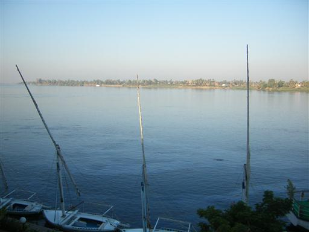
トウモロコシ畑の広がる平地を抜けて、王の墓があるナイル西岸に向かう。
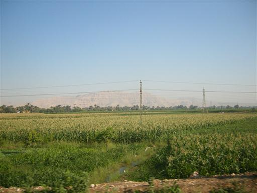
メムノンの巨像。新王国時代に作られた巨大な像。
像の後ろには葬祭殿があったらしい。
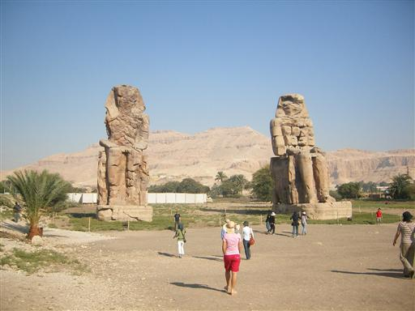
ハボー神殿（ラムセス3世葬祭殿）に到着。
ここにも大きな塔門が残っている。
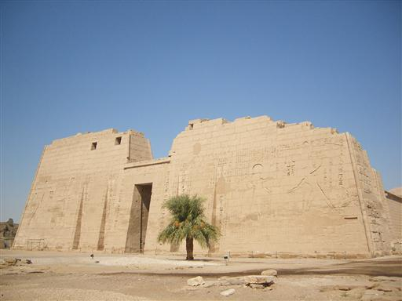
この葬祭殿には彩色のレリーフが残っている。
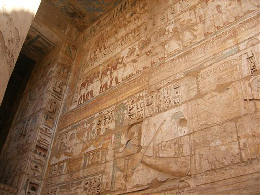
他の神殿でもレリーフにはすべて色が塗られていた。
造られた当時は相当カラフルだっただろう。
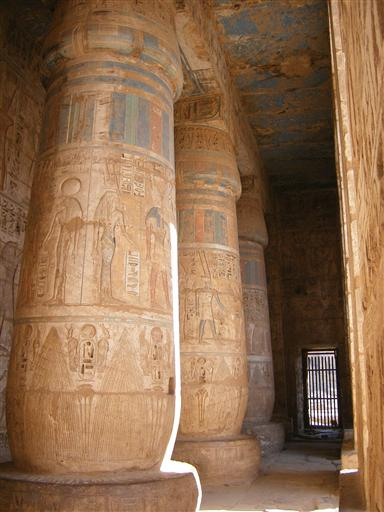
この葬祭殿の背後には岩山が聳える。
山の側には多くの葬祭殿や墓が発見されている。
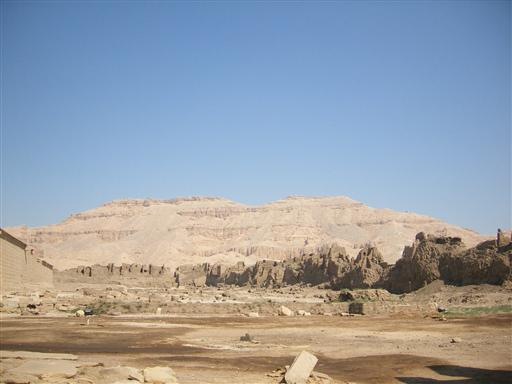
岩山の麓にある、ハトシェプスト女王葬祭殿に行く。
ここは1997年に観光客を狙った無差別テロ事件があったところ。
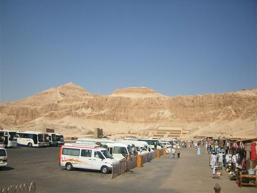
他の遺跡とは異なり、近代建築っぽい造りになっている。
空の青と黄色のコントラストが美しい。
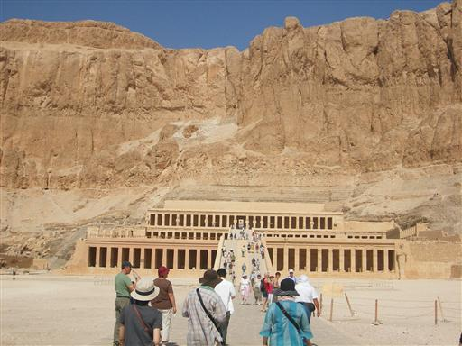
神殿には女王の像が並んでいる。
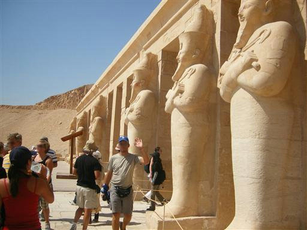
この遺跡は女王の弟によって破壊されたのを修復したもの。
修復待ちの石も、まだたくさん残っている。
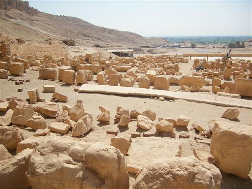
葬祭殿の高台からは遠くの景色が見渡せる。
ナイル川の周りには緑色が広がっているのがよく分かる。
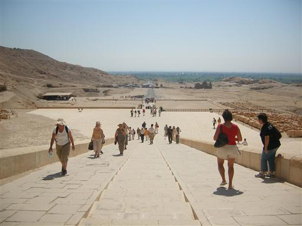
続いて山の奥の方にある王家の谷へ向かう。
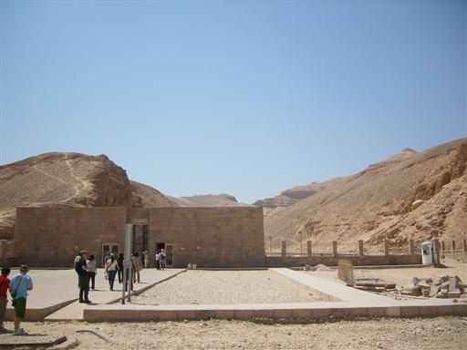
王家の谷の模型。
現在までに60以上の墓が発見されている。
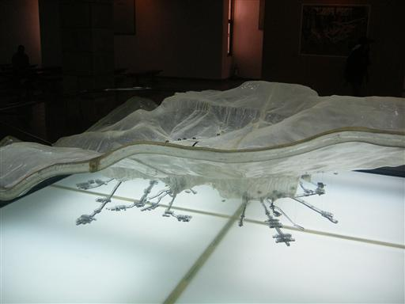
王家の谷。奥にピラミッドの形をした山があるので、
ここに多くの墓が造られたとも言われている。
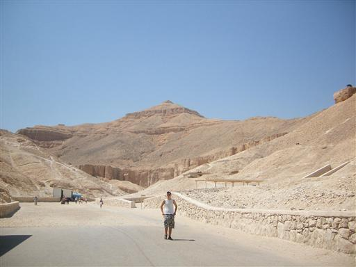
ツタンカーメンの墓の入口。
他の墓に比べて内部は非常に小さい。
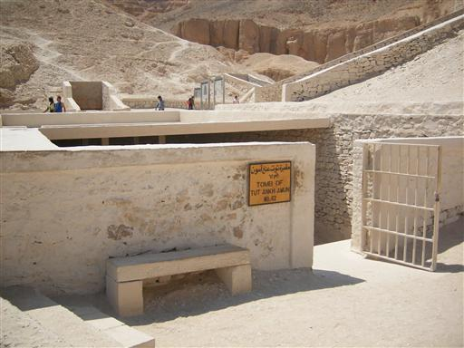
この墓で、黄金のマスクを始め多くの財宝が見つかった。
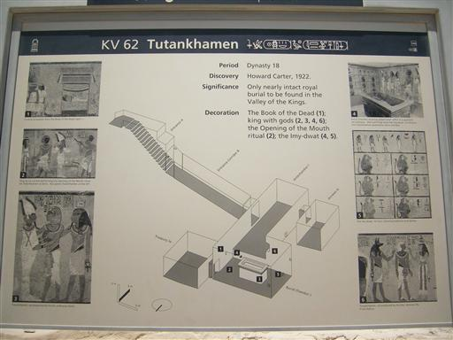
ルクソール市街に帰還。ルクソール神殿に立ち寄る。
エジプトの観光地の入口には必ず、空港のようなゲートがあり、
警察官が常駐している。
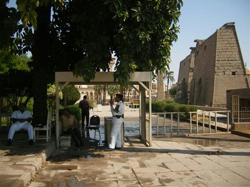
神殿入口には大きなオベリスクが立っている。
昔は2本並んでいたらしいが今は1本しかないので少し不恰好。
もう1本はと言うと、パリのコンコルド広場に立っているらしい。
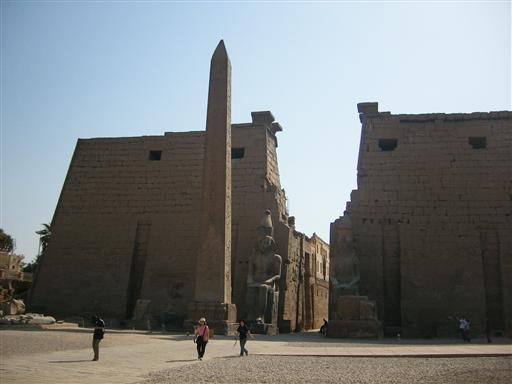
中庭。ここにも多くの柱が立っている。
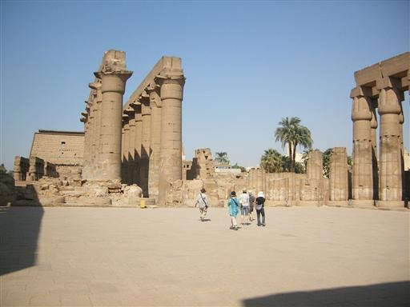
仲睦まじそうな王子と王女の像。
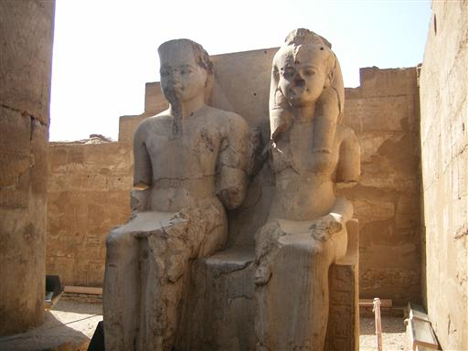
この神殿は一時期キリスト教徒が使用していた。
そのため、明らかに古代エジプトのものとは違う壁画が残っている。
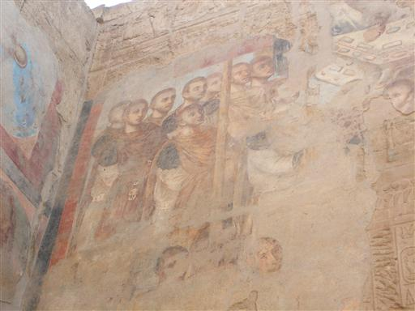
「立入禁止」。それだけ日本人観光客が多いということか…
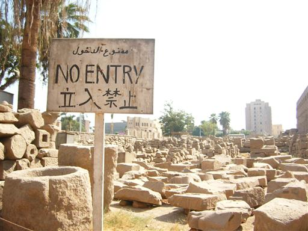
ホテルに帰還。夕方の出発まで休憩時間。
暇なので辺りをうろうろしていると怪しげな遊具を発見。
乗って手足を動かすと回転する仕組みになっている。
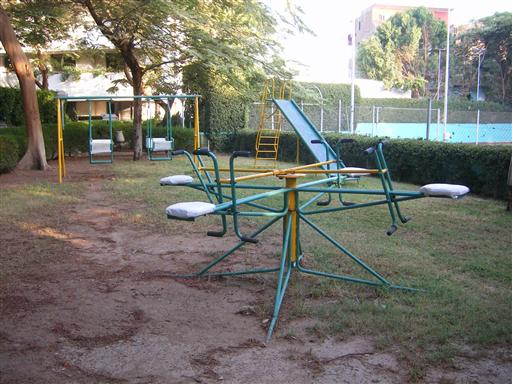
日が沈んできた。
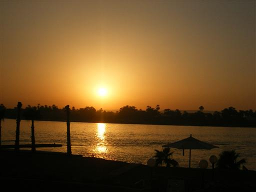
ホテルを後にし、ルクソール駅に到着。
夜行列車に乗ってカイロに戻る。
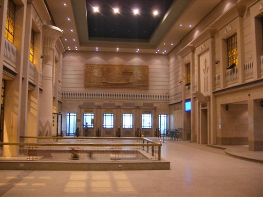
30分ほど遅れて列車到着。
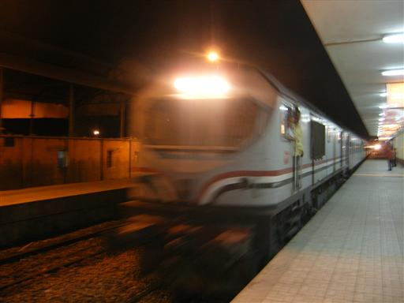
中は個室になっている。
しばらくすると車掌が来て、寝台ベッドに作り変えてくれる。
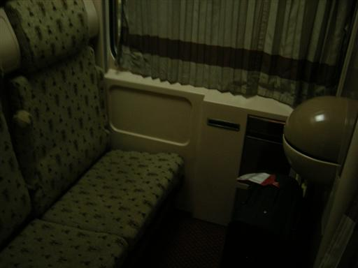